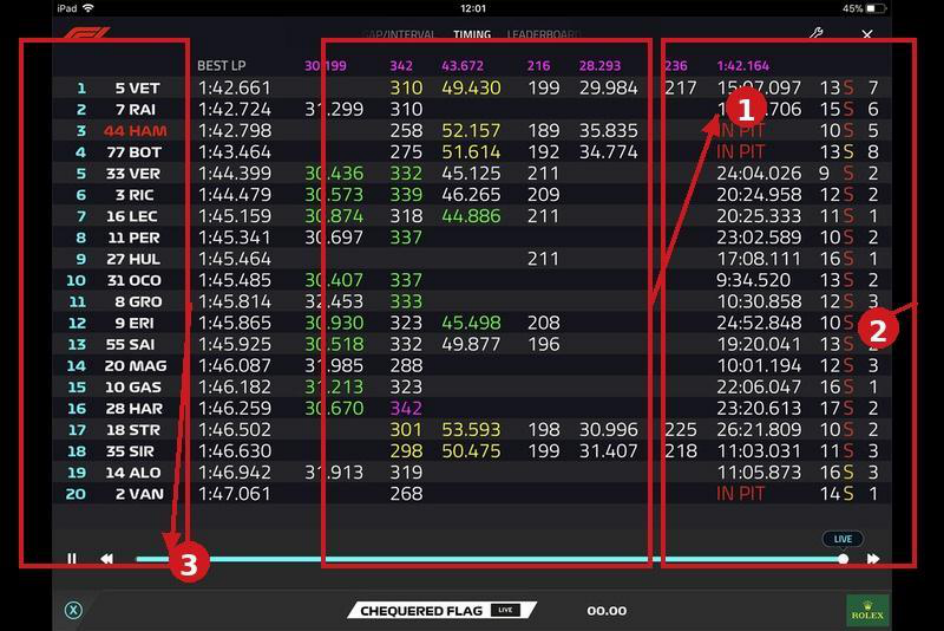
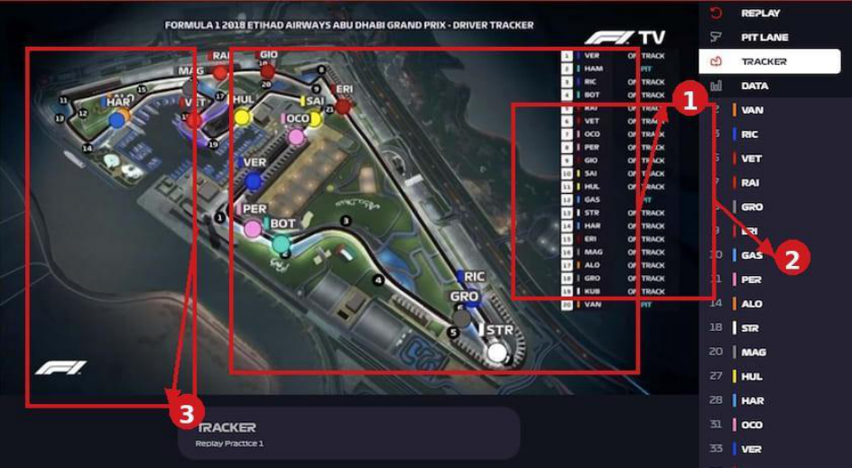
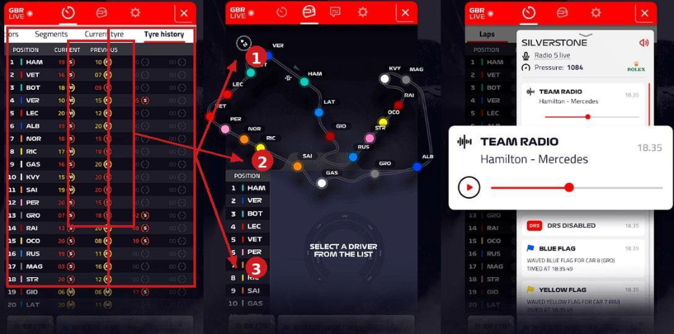
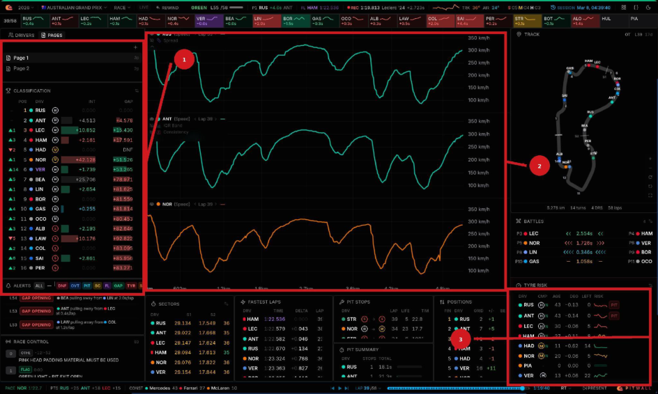
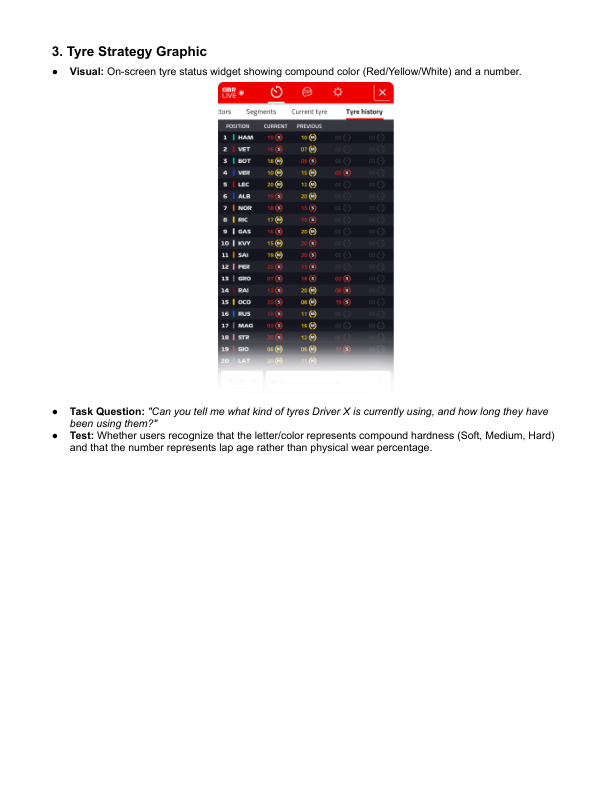
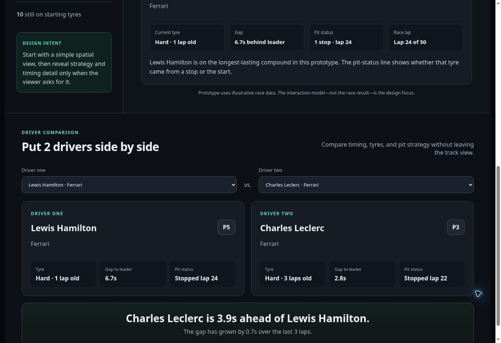

Product design · UX research · Interactive prototype
Race Lens
Making an F1 race easier to read, from annotated interfaces to a novice-friendly replay.

Seeing the race is not the same as understanding it.
F1 interfaces contain an enormous amount of useful information. The design question was how a newer viewer could understand gaps, tyres and pit stops without first learning the conventions of a timing wall.
Research, interaction design and the working prototype.
The work spans existing-interface analysis, a task-based interview protocol, design exploration and implementation in HTML, CSS and JavaScript. The research artifacts below show observations and questions that informed the design; they are not a record of measured usability improvements.


A number needs a reference point.
The timing-table analysis questions the distinction between interval and gap to the leader, unfamiliar abbreviations and rapidly changing values. Race Lens makes the reference explicit: “seconds behind leader,” with names alongside driver codes.


A map gives orientation, not the whole answer.
Spatial proximity can be misleading during pit cycles or when cars are lapped. The prototype pairs its spatial field with a running-order list and a selected-driver panel, so the map is not the only way to read the race.


Explain what the tyre label means.
Compound colours help recognition, but they do not explain the pace–durability trade-off. Driver focus combines the compound name, age in laps, pit status and a short plain-language explanation.


Give the viewer somewhere to start.
The analysis identifies an expert-oriented density of panels. Race Lens begins with the field and a race snapshot; selecting a driver brings the relevant timing and tyre context into focus.
Turn broad confusion into concrete tasks.
The interview protocol asks a novice to interpret timing gaps, sector colours, tyre age, map battles, pit re-entry and safety signals, then identify what attracts attention in a brief glance. These tasks make “is this understandable?” specific enough to investigate.


One replay state, several ways to understand it.
Control the pace
Play, scrub across 50 illustrative laps, or jump to lap 24 to inspect a pit-stop transition.
Choose the relevant detail
Select a driver from the map, selector or running order. Tyre summaries and pit progress keep the wider field in view.
Compare without mental arithmetic
Two driver selectors produce side-by-side timing, compound, tyre age and pit status, plus a sentence describing the gap.


A finished interaction prototype.
JavaScript derives the displayed lap, tyre changes, tyre age and comparison text from the illustrative driver data. The SVG track, driver markers, sidebar and comparison panel update together. This demonstrates the interaction model; it does not simulate or reproduce real race telemetry.

Python · SQL · Relational data · Visualization
Job Market & Skills Analysis
What a focused sample of analyst, product and BI postings says about roles, experience and skills.
Explore case study →